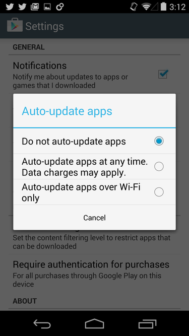

Recently a new error worried Smart Gaga users a lot.
The emulator causes a blue screen of death, causing the PC to restart
and showing messages related to “aow drv x64 ev sys” or, more often, “android kernel x64 ev.sys”.
The causes of the blue screen on the Smart Gaga vary widely. We've
listed some things you can try below. Among them, the ones that
have shown the best results are to disable the play store and its
updates and also limit the permissions it has after it has already
installed the game.Solution 1 - Stop and limit PlayStore permissions
The blue screen error on the Smart Gaga is apparently caused by a conflict between the app store and the operating system. Follow the steps below to disable her functions to try to correct the problem.
With Play Store open, go to the Menu, then Settings. Disable automatic application update as shown below.

That done, I recommend that you always disable the Play Store service before opening the game. Just go to the apps and force it to stop.
Solution 2 - Uninstall Segurazo
Those who installed Smart Gaga using a Filehorse link may have inadvertently installed Segurazo, which is offered during installation. Everything indicates that he is at fault at the registry office in this blue screen problem.
Look for it in the programs installed on your PC and, if you find it, uninstall it.
All links here on the site have been switched to direct links to avoid this problem in the future.
Solution 3 - Screen optimizations
Look for the Smart Gaga icon on the desktop. Right click -> Properties. Then go to the "Compatibility" tab and activate compatibility with Windows 7 (if you already use Windows 7, skip this part). Check the options " disable full screen optimizations " and " run this program as an administrator ". See the image:
Outras soluções
Set the clock to the right time to avoid synchronization problems. To do this, go to Date and Time and choose the time zone. Leave "Automatic date and time" checked and "Automatic time zone" unchecked.
Disable Windows Defender;
Close and remove all antivirus (especially Avast! And Segurazo)
Update your vcredist library.
Try using another version of the emulator, especially 458 and 601. All links are in Donwloads.
Other Problems and Bugs
Whoever uses Smart Gaga has found several errors in the emulator since the last Free Fire updates. In a way this is already expected, since the emulator is no longer updated. The bright side is that most of the errors that have appeared so far have a solution. See solutions:
Free Fire does not start: Make sure to check the box "do not show this dialog again" when starting the game. When the game “closes”, make sure it doesn't just minimize itself. Also check if you have configured it according to the section above, especially rendering mode = OpenGL.
Smart Gaga hangs at 98%: Check your PC for updates and look for outdated drivers. Also check the version of your .NET Framework and Visual C ++. If you can access the menu, make sure the rendering mode is OpenGL. In the latter case, consider uninstalling the emulator and installing again in another folder. Clean your PC with CCleaner and update DirectX.
Connection failed, Error 42: Disable Windows Firewall, always run the emulator as an administrator. Also check your internet and your antivirus.
Black screen when starting: Again check if the rendering mode is in OpenGL and update your video driver. Perhaps you should manually increase the emulator's memory.
Root on Smart Gaga
A lot of people have doubts: How to root Smart Gaga? And the answer is: the SmartGaga emulator comes with root. The problem is that the developer used commands different from the normal ones, which means that most applications are not able to have the super function.
There is not much to do about it since the Smart Gaga project has been stopped.
Warning: Please download SmartGaga from this site and go through the shortener to be aiding in the development, even if you are not here to download it click on any download link and go through the shortener that you will be helping us with, from now on saldations.
Have questions about this emulator? My E-mail: pedrojogad1o@gmail.com